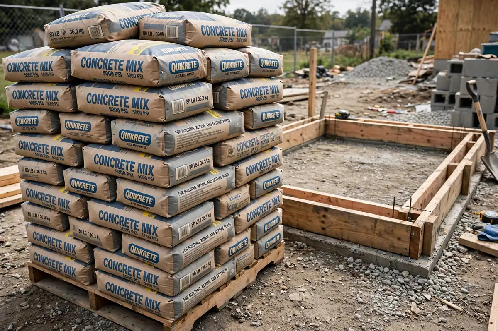
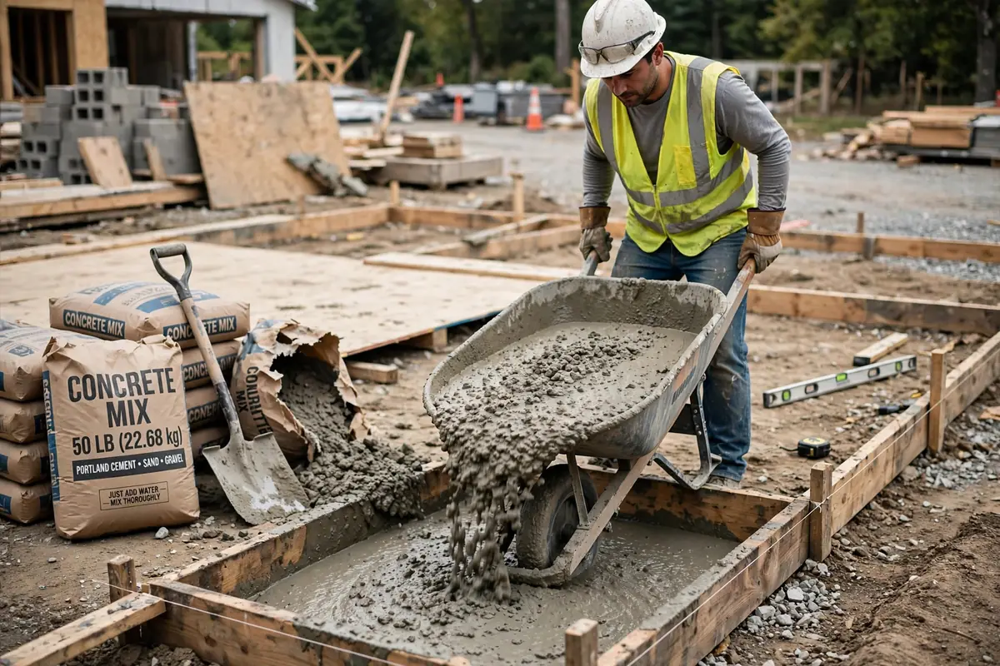
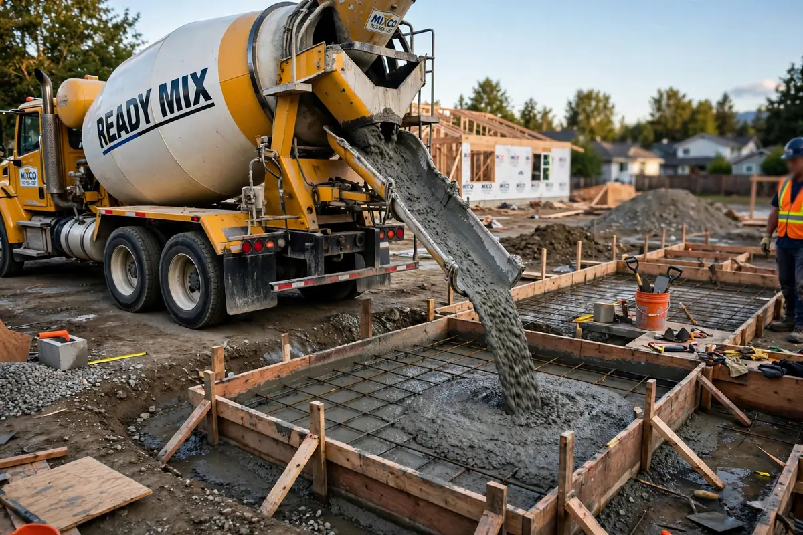

Quick answer: a 10×10 ft slab at 4 inches thick needs 62 bags of 80-lb concrete mix — 56 bags by exact volume, plus a 10% waste allowance. That is 1.23 cubic yards, and it means lifting, moving and mixing 4,960 lb of dry mix. At 6 inches thick the same slab needs 92 bags. This size also sits almost exactly on the bags-vs-ready-mix price crossover, so this article prices a 10×10 slab both ways, with every assumption stated so you can substitute your own local prices.
Bag calculators give you the count. They do not tell you what 62 bags feel like on pour day, or whether a truck would cost less for this exact slab. This page does.

The worked example: a 10×10 slab at 4 inches, step by step
Every bag count here comes from the same steps. Here is the headline slab worked in full, so you can check the arithmetic and reuse the method for any size.
- Step 1 — volume in cubic feet. Length × width × thickness, with thickness in feet: 4 inches is 4 ÷ 12 = 0.333 ft. 10 ft × 10 ft × 0.333 ft = 33.3 ft³
- Step 2 — convert to cubic yards. One cubic yard is 27 cubic feet. 33.3 ÷ 27 = 1.23 yd³
- Step 3 — convert volume to bags. An 80 lb bag of concrete mix yields 0.60 ft³ of placed concrete (see the yield table below). 33.3 ÷ 0.60 = 55.6 bags → 56 bags exact
- Step 4 — add the waste allowance. The sub-base is never perfectly level, forms bulge slightly, and some mix stays in the mixer. The standard planning allowance is 10%. 55.6 × 1.10 = 61.1 bags → 62 bags to buy
- Step 5 — count the weight, because you will move it: 62 bags × 80 lb = 4,960 lb
That is just under two and a half tons, handled more than once — shelf to cart, cart to vehicle, vehicle to mixer — so the weight you lift across the day is considerably more. A bagged 10×10 pour is entirely possible; thousands are poured every year. But "62 bags" means a full, heavy day of continuous work for two people, not a quick Saturday job.
Where the bag yields come from
Bag counts are only as good as the yields behind them, so here they are with their source: the manufacturer figures from the Quikrete Concrete Mix data sheet (product No. 1101 class), corroborated against Sakrete concrete mix data sheets, both checked in November 2026.
| Bag size | Yield per bag | Bags per cubic yard (exact) |
|---|---|---|
| 80 lb | 0.60 ft³ | 45 bags (27 ÷ 0.60) |
| 60 lb | 0.45 ft³ | 60 bags (27 ÷ 0.45) |
| 40 lb | 0.30 ft³ | 90 bags (27 ÷ 0.30) |
Note: smaller bags are not a shortcut. A 40 lb bag yields half an 80 lb bag, so you need twice as many, and one cubic yard is roughly 3,600 lb of dry mix whichever size you choose — smaller bags lighten each lift, not the total.
For a size not covered below, work it the same way — or check its volume against our cubic yard coverage chart.
The slab table: 8×8, 10×10, 12×12 and 20×20 at 4″ and 6″
All counts include the 10% waste allowance, rounded up to the next whole bag. The final column shows total dry weight for the 80 lb option — read it before you decide which column to shop from.
| Slab | Thickness | Volume | Cubic yards | 80 lb bags | 60 lb bags | 40 lb bags | Total weight (80 lb bags) |
|---|---|---|---|---|---|---|---|
| 8×8 ft | 4″ | 21.3 ft³ | 0.79 yd³ | 40 | 53 | 79 | 3,200 lb |
| 8×8 ft | 6″ | 32.0 ft³ | 1.19 yd³ | 59 | 79 | 118 | 4,720 lb |
| 10×10 ft | 4″ | 33.3 ft³ | 1.23 yd³ | 62 | 82 | 123 | 4,960 lb |
| 10×10 ft | 6″ | 50.0 ft³ | 1.85 yd³ | 92 | 123 | 184 | 7,360 lb |
| 12×12 ft | 4″ | 48.0 ft³ | 1.78 yd³ | 88 | 118 | 176 | 7,040 lb |
| 12×12 ft | 6″ | 72.0 ft³ | 2.67 yd³ | 132 | 176 | 264 | 10,560 lb |
| 20×20 ft | 4″ | 133.3 ft³ | 4.94 yd³ | 245 | 326 | 489 | 19,600 lb |
| 20×20 ft | 6″ | 200.0 ft³ | 7.41 yd³ | 367 | 489 | 734 | 29,360 lb |
Read the table by weight as much as by count. The 8×8 at 4 inches — 40 bags, 3,200 lb — is a demanding but realistic bagged pour with a helper. The 12×12 at 6 inches is 132 bags and over five tons; the 20×20 rows are not bag jobs in any practical sense, and seeing 245 or 367 bags written down settles the question faster than any argument.
A note on thickness: 4 inches is the common thickness for patios, shed bases and paths. Six inches is the general guidance for slabs that regularly carry vehicle loads — a driveway or parking pad — because the extra depth spreads the load and resists cracking under wheels. That is general guidance only, not a design rule for your ground and vehicle; our concrete slab thickness guide works through the choice in detail.
The mixing logistics nobody puts on the bag
A standard small site mixer handles about 2 bags of 80 lb mix per batch. Apply that to the headline slab:
Thirty-one batches, back to back, while the concrete placed first is already setting. The pour cannot pause: stopping mid-slab risks a cold joint — a weak seam where fresh concrete meets hardened concrete. A helper is close to essential: one person mixing while the other places and levels keeps the pour ahead of the setting clock. Mixing in a wheelbarrow by hand removes the rental cost but slows every batch and makes water content — and therefore strength — harder to keep consistent. If you go the bag route at this size, a rented mixer is money well spent; its cost is included below.

The cost crossover, priced for this slab
Here is the part the calculator sites leave out. For the general decision — yields, per-yard costs and the full fee structure — see concrete bags vs ready-mix. This section does the narrower job: pricing this slab both ways.
The crossover in one sentence: bags and ready-mix trade places at roughly 1 cubic yard — about 45–50 bags. Below that, the truck's delivery and short-load fees cost more than its cheaper concrete saves. Above it, the fees spread over enough yards that the truck usually wins on price alone, before labour. A 10×10 at 1.23 yd³ sits just past that line, which is why it is worth pricing properly.
The 10×10 slab at 4″, priced both ways
Every price below is an example price, chosen inside a typical recent US range — not a live price for your store or plant. The assumptions are stated in full so you can substitute your own quotes.
Assumptions (examples — substitute your local prices):
- 80 lb bag of concrete mix: $6.50 per bag (example; a typical example range is about $5.50–$7.00 per bag)
- Mixer rental: $75 per day (example; typical example range about $50–$100 per day)
- Ready-mix concrete: $170 per cubic yard (example; typical example range about $150–$190 per yard)
- Ready-mix delivery: $75 per load (example flat fee)
- Short-load fee: $50 per cubic yard on orders under 4 yd³ (example — many plants charge a fee of this kind on small orders carried in a 9–11 yd³ truck; some charge a flat fee, a few charge none)
- Ready-mix order quantity: 1.5 yd³ — you need 1.36 yd³ including waste, and plants commonly sell in part-yard increments
Bags, for the 10×10 at 4″: 62 bags × $6.50 = $403 for the mix; mixer rental $75; total: $478 — plus a full day of heavy work for two people, and 31 batches. If you already own a mixer, drop the rental: the bags total is $403. Your time is still in the bags column either way.
Ready-mix, for the same slab: 1.5 yd³ × $170 = $255 for the concrete; delivery $75; short-load fee 1.5 × $50 = $75; total: $405 — placed in minutes, as one uniform batch.
The verdict for this slab: at these example prices the truck is about $73 cheaper than bags with a rented mixer, and about level if you own the mixer — $405 against $403. That near-tie is the real answer: the 10×10 is the crossover slab. Cheap local bags or a steep short-load fee and bags win on money; renting a mixer, pouring alone, or valuing your day at anything and the truck wins. What the numbers rule out is the assumption that bags are automatically cheap at this size — at 62 bags, they are not.
Either side of this slab the picture sharpens. An 8×8 at 4 inches (40 bags) prices at about $260 in bags — below the size most plants will deliver willingly. A 12×12 at 4 inches (88 bags) prices at about $572 plus mixer rental, against roughly $515 for a 2 yd³ delivered order on the same assumptions. Past 2 cubic yards the contest is over; the only remaining reasons for bags are poor truck access or a pour you need to split across days.

Why the waste allowance exists — and why skipping it is a false saving
Every count here includes 10% extra, because running out mid-pour is the most expensive mistake in small-slab work. The allowance covers a sub-base slightly lower in one corner, forms that flex slightly, mix left coating the mixer and tools, and simple spillage — together, they happen on essentially every pour.
Skipping it saves about six bags on the headline slab. Running short costs far more: a dash to the store while concrete sets, a cold joint, or a thin corner that cracks first. Buy the extra bags and return the unopened survivors. The allowance is insurance priced in bags.
So, bags or truck for your slab?
- 8×8 ft at 4″ (40 bags): bags are a reasonable choice — hard work, but a manageable single pour, and below the practical size for delivery.
- 10×10 ft at 4″ (62 bags): the crossover slab. Price both ways with your real local quotes. Own a mixer and have a helper? Bags are defensible. Renting, pouring solo, or short on time? Order the truck.
- 10×10 ft at 6″ (92 bags) and 12×12 ft (88–132 bags): the truck, unless access makes delivery impossible. The weights — 7,000 lb and up — have outgrown the saving.
- 20×20 ft (245–367 bags): ready-mix, without a serious contest.
Whichever way you go, confirm your thickness in the concrete slab thickness guide, check your volume against the cubic yard coverage chart, and work through the general decision in concrete bags vs ready-mix before you buy a bag or book a truck. You can also run your dimensions through our concrete calculator and convert the yardage with the bag calculator.
Estimates only — bag yields are manufacturer data-sheet figures checked November 2026 and prices are labelled examples, not live quotes. This article is a planning guide, not structural design: slab thickness, reinforcement and ground preparation for load-bearing or vehicle use need to suit your site and local requirements.
Frequently Asked Questions
56 bags by exact volume at 4 inches thick (33.3 ft³ ÷ 0.60 ft³ per bag); 62 bags with the standard 10% waste allowance — the number to actually buy. At 6 inches thick, buy 92 bags.
82 bags at 4 inches thick, including the 10% waste allowance (33.3 ft³ ÷ 0.45 ft³ per bag, plus 10%). Total weight is about the same as the 80 lb option — more, lighter lifts instead of fewer, heavier ones.
4,960 lb of dry mix at 4 inches thick using 80 lb bags (62 × 80 lb); 7,360 lb at 6 inches. That is several loads for most pickups, so delivery of the bags themselves is worth pricing.
Nearly a tie at this article's example prices: about $478 for bags including a rented mixer, $403 if you own a mixer, and about $405 for a 1.5 yd³ ready-mix delivery including delivery and short-load fees. The crossover sits at roughly 1 cubic yard; a 10×10 at 4 inches (1.23 yd³) sits just past it, so local prices and mixer ownership decide it.
About 31 batches in a standard small mixer holding roughly 2 bags per batch. That continuous rhythm, with no long pauses, is the main practical argument for ready-mix at this size.